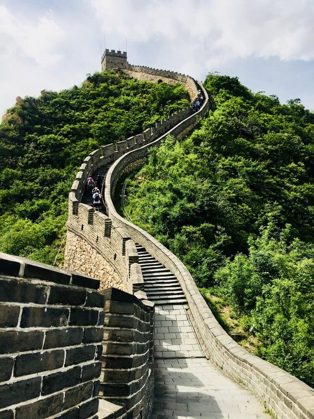

The Great Wall of China
TENS OF MILLIONS VISIT EACH YEAR
Now a Chinese national symbol, the vast Great Wall was built over
nearly 1800 years. The Great Wall is actually many walls that
overlap; the combined length of those layers is estimated to
be 10,000 to 20,000 kilometers. The design of the wall, which
is constructed across mountain passes and ridges, makes
strategic use of the natural terrain. The best preserved
portion of the wall runs east to west from southeastern
Liaoning Province to northwestern Gansu Province.
The Ming dynasty strengthened and maintained these sections
from 1368 to 1644.